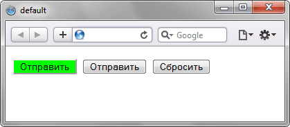

| Android | Firefox Mobile | Opera Mobile | Safari Mobile |
| 3 | 4 | 10 | 5 |
Псевдокласс :default
Псевдокласс :default применяет стиль к элементам форм, которые установлены по умолчанию в группе похожих элементов. Например, у нас может быть две кнопки для отправки данных формы на сервер. Одна из этих кнопок задана по умолчанию, мы можем изменить её стиль через :default.
Синтаксис
Селектор:default { ... }Пример
<!DOCTYPE html>
<head>
<meta charset="utf-8">
<title>default</title>
<style>
:default {
background-color: lime;
}
</style>
</head>
<body>
<form>
<p><input type="submit"> <input type="submit"> <input type="reset"></p>
</form>
</body>
</html>Результат примера показан на рис. 1. В данном примере кнопка Submit, заданная по умолчанию, имеет другой цвет.

Рис. 1. Результат использования псевдокласса :default
Спецификация
| Спецификация | Статус |
|---|---|
| WHATWG HTML Living Standard | Живой стандарт |
| HTML5 | Возможная рекомендация |
| Selectors Level 4 | Рабочий проект |
| CSS Basic User Interface Module Level 3 | Рабочий проект |
Браузеры
| Internet Explorer | Chrome | Opera | Safari | Firefox |
| 10 | 10 | 5 | 4 |